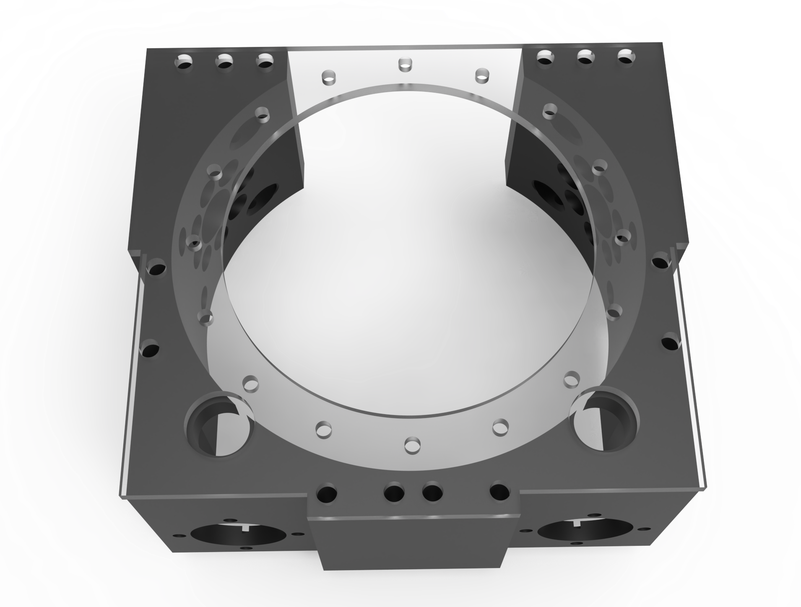

This project was an experiment in creating a very compact robot drivetrain that would be highly maneuverable. Many "swerve" drivetrains that can point their wheels in any direction have already been demonstrated, but the mechanisms used to drive a wheel and rotate it in place often take up a lot of space. I placed a wheel at the center of a 3D-printed differential driven by two motors. Depending on the difference in velocity of the two motors, the wheel can be made to rotate normally, turn in place, or a combination of both. Everything in this project was modeled in SolidWorks prior to printing. I used no premade gear models - all of the 3D-printed gears were modeled from scratch and are parametric, allowing the design to be modified easily.
Testing a single wheel module.
A single radial bearing used in the assembly.
The housing used to mount the differential. Two motors face-mount to the holes at the bottom.